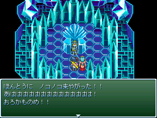

天外魔境ZERO完全攻略
↑これは･･･!?詳しくは｢おまけ｣をご覧下さい。 あなたは ■
動作環境■
フレーム対応のブラウザでご覧ください。
Internet Explorer 6.0、文字サイズ小で最適化しています。
左側にフレームが表示されない時はここをクリックしてください。
☆天外魔境ZERO 少年ジャンプの章にも完全対応！☆

人目の来館者です！
※このウェブページは、(株)ハドソン及びその他の関連企業とは一切関わりがありません｡
また当サイトで使用している画像等は､(株)ハドソンを始めとする各種企業･団体のものです｡
権利保有者の方にとって不都合等がありましたら､ご連絡いただければ取り下げいたします｡
※当サイトの攻略情報の無断転載を固く禁止します。